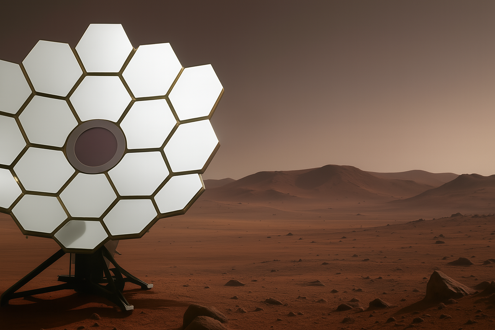

Habitat Temperature Regulation for Martian Missions
Project Overview
This project tackles the unique challenge of habitat temperature regulation for future Martian missions. Utilizing thermoelectric generators, 3D-printed components, and open-source control systems, it aims to provide practical solutions for off-world sustainability.

3D model rendered in Roblox Studio
Project Inspiration
Mars is a very interesting problem in that conventional HVAC ideas don’t really work: vapor-compression systems rely on refrigerants that can’t condense properly at Mars’s near-vacuum surface pressure of about 0.6 kPa (≈ 0.6 % of Earth’s sea-level atmosphere). Fans and radiators struggle because convective heat transfer is extremely weak in the thin CO₂ atmosphere, and the constant dust exposure and thermal cycling (from roughly −120 °C at night to +20 °C at midday) degrade seals, bearings, and coatings. With only about 40–45 % of Earth’s solar flux, you can’t simply scale a terrestrial heat pump. That pushed me to ask whether a mostly 3D-printed, recyclable system could capture daytime solar heat and release it after sunset in such a hostile environment.
Closer to home, the urgency is personal: build something robust and affordable enough to help heat my mom’s restaurant this winter. The HVAC fix isn’t feasible, so I’m aiming for a practical, safe add-on—mirrors for collection, a compact spiral heat exchanger, and simple smart controls—to cut fuel costs and keep staff and customers warm. Same idea, two frontiers.
Requirements and Constraints
Mission Goal
Mostly 3D-printed, solar-thermal heat-pump concept adaptable to ~0.6 kPa CO₂ and large thermal swings.
Spherical mirrors scatter light into an area known as a focal volume.
On the other hand, parabolic mirrors focus light into a single focal point.
This makes parabolic mirrors suitable for concentrating large amounts of light onto a single point, like, say, a small heat exchanger.
When arranged in an array, hexagonal geometries perform better at filling gaps between mirrors, as evidenced by the James Webb Space Telescope design process.
Heat Exchanger Geometry
Picked: Aluminum plate with spiral groove to seat 12 mm OD silicone tubing; paste + clamp pressure for contact.
Tradeoffs: Spiral gives a predictable path, serviceable tubing, and printable fixtures.
Sun Tracking and Alignment
4 Light Dependent Resistors (LDRs) mounted in different quadrants feed real-time light intensity to a Microcontroller Unit (MCU).
The MCU will create a 2x2 grid that models the current location of the sun in the sky.
Light intensity readings are compared to known values, allowing for determining a night/day/dust storm cycle. In the event of a blackout, the motors will be locked in place and the system will enter a state of hibernation.
Using motors + magnetic encoder feedback, the MCU will reorient the mirror array to face the sun directly.
Materials and Manufacturability
Picked: PETG for brackets/connectors and ASA for heat-sensitive components. Future iterations will explore the use of recycled PET (rPET) plastics from mission waste.
Follow Us